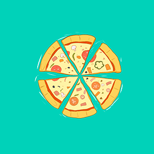

Ah, pizza, what’s not to love? Since this is all about statistics and fun pizza facts, I’ll begin with a bold statement: chances are, at some point in your life, pizza was (and may still be) your favorite food.
It’s hard to find fault with a meal made up of cheesy, delicious manna from heaven. Add to that the fact that pizza is super customizable – plain cheese or loaded with the works – there’s a pizza for every taste. If you consider yourself a pizza fanatic, or even if you just really like random information, here are some fun facts about pizza nutrition and pizza in general.
Of the more than 5 billion pizzas sold worldwide, approximately 3 billion are sold in the US each year — that’s 46 slices a year per person.
93% of Americans have eaten pizza sometime in the last month.
October is National Pizza month in the US
There are approximately 61,300 pizzerias in the US.
Approximately 36% of Americans think pizza is perfect for breakfast.
Ah, pizza, what’s not to love? Since this is all about statistics and fun pizza facts, I’ll begin with a bold statement: chances are, at some point in your life, pizza was (and may still be) your favorite food.
It’s hard to find fault with a meal made up of cheesy, delicious manna from heaven. Add to that the fact that pizza is super customizable – plain cheese or loaded with the works – there’s a pizza for every taste. If you consider yourself a pizza fanatic, or even if you just really like random information, here are some fun facts about pizza nutrition and pizza in general.